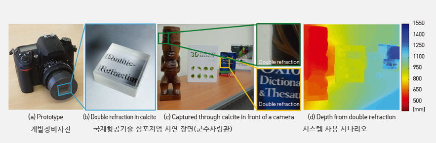

Report by Subjects
Report by Subjects
KAIST RESEARCH ACHIEVEMENTS
Birefractive Stereo Imaging for Single-Shot Depth Acquisition
School of Computing Min H. Kim
Summary
Much like everyone has a color camera on their mobile phones today, it is expected that 3D color cameras will be common on mobile computing devices in the future. Such 3D color cameras will need to be able to capture not only color but also depth without relying on any additional equipment, such as a laser or an additional camera. It is likely that all color cameras will be replaced with 3D color cameras that are capable of capturing geometrically accurate distance information and the 3D shapes of objects, in addition to general color information. The 3D information captured by compact 3D color cameras will enhance the computing and imaging devices that we will come to use in our daily lives, such as virtual/augmented reality devices, autonomous vehicles, and medical imaging services, to name a few.
R&D Report
Depending on its polarization state, the incident light on a birefringent material such as calcite can be refracted at two different angles. This physical phenomenon is called double refraction. Based on this, we propose a novel 3D imaging method that goes beyond traditional cameras, which are capable of capturing color images only, to capture not only color but also depth. Whereas traditional stereo imaging requires at least two stereo cameras, our 3D imaging method can capture depth from a single picture using double refraction. Three-dimensional imaging technology will be a core technology for advanced technologies in the future, as it will allow for the creation of “eyes” for machines, such as autonomous vehicles. Traditional 3D imaging relies on either laser projection or more than two stereo cameras, resulting in a device with a larger form factor than ordinary cameras. Building a small yet efficient 3D camera will be crucial for virtual/augmented reality devices, autonomous vehicles, 3D microscopes, and other types of devices. We are therefore motivated to address the problem with the form factor of 3D imaging devices by introducing birefractive stereo that allows for the capture of 3D images by simply attaching a birefractive filter to an ordinary camera.
 Figure 1. Birefractive Stereo Imaging for Single-Shot Depth Acquisition
Research Results
Here, we propose birefractive stereo imaging as a novel technique for single-shot depth estimation based on double refraction. This is easily achieved by simply placing a birefringent material in front of the lens of any conventional camera [see Figure 1 (a)], which has a minimal impact on the form factor of the setup and allows users to capture images without the burden of delicate setups or complex additional hardware. In addition, it does not sacrifice spatial resolution, introduces no visible image degradation (as shown by our analysis and results), and is readily applied to personal photography. The key insight of this research is the use of birefringence, an optical property of some anisotropic, transmissive materials where an incident light ray is split into two rays (called ordinary and extraordinary rays), resulting in double refraction [see Figure 1 (b) & (c)]. This phenomenon allows us to capture a single image that contains overlapping information of the scene, from which depth information can then be inferred [see Figure 1 (d)]. The birefractive stereo algorithm is based on a novel image-formation model for double refraction, which enables single-shot depth acquisition. In addition, the optical model provides a calibration method for the intrinsic and extrinsic properties of birefringent crystals, and has demonstrated potential for application to several useful image-editing techniques that leverage the model’s capability to estimate depth. These results of our method show that it is possible to build a new type of color-and-depth camera with a compact design by adopting our birefractive stereo imaging techniques, which allows us to reduce the form factor of current color-and-depth cameras significantly. This could also be used for other technologies that require both color and depth, such as augmented reality devices, autonomous vehicles, and 3D microscopy.
Research Funding
This research was funded by grants from the National Research Foundation of Korea (NRF) (Nos. 2016R1A2B2013031, 2013R1A1A1010165, and 2013M3A6A6073718), the ICT R&D program of the MSIP/IITP (No. 10041313), and an ERC Consolidator Grant (No. 682080).
Research Outcomes
Published in ACM Transactions on Graphics (TOG) , one of the top international journals in the field of graphics:
Seung-Hwan Baek, Diego Gutierrez, and Min H. Kim, “Birefractive Stereo Imaging for Single-Shot Depth Acquisition,” ACM Transactions on Graphics
(Proc. SIGGRAPH Asia 2016), 35, 6, 194:1-194:11 (2016).
Patent filed in the U.S. : US patent application: 15/236,911, published on Aug. 16, 2016
Patent registered in Korea : 10-1632069
Included on the list of KAIST Breakthroughs for Fall 2016